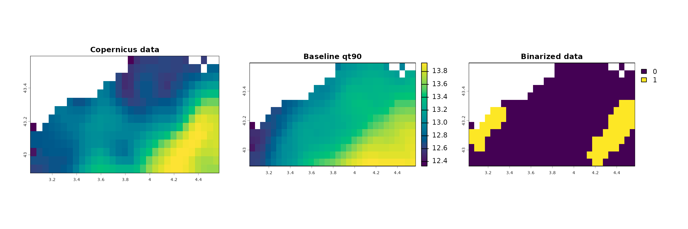
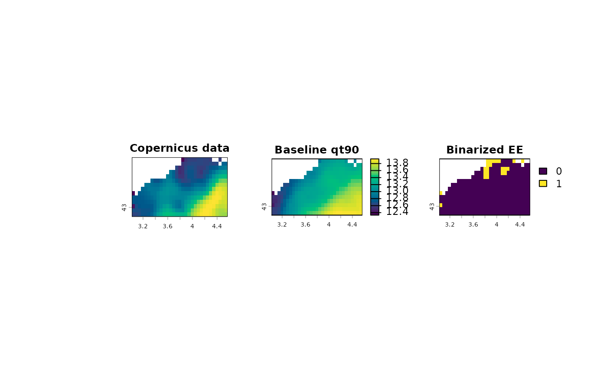

vignettes/calc_binarize.Rmd
calc_binarize.RmdThe function compares your timeseries (spatraster) with the baseline
(spatraster created using BEE.calc.baseline) or a fixed threshold.
For most users, BEE.calc.binarize() serves only as an intermediate step
in the pipeline, providing a required input for BEE.calc.true_event().
The output is exposed primarily for advanced users who need to implement
highly specific or complex filtering procedures beyond the built-in
options. For standard analyses, BEE.calc.true_event() addresses the vast
majority of use cases for extreme-event identification, including common
criteria such as minimum event duration and the merging of temporally
close events.
A Spatraster imported containning the sea surface temperature in the
Gulf of Lion from the 1st of January 2023 to the 31th of Decembre 2025.
There are only one variable in the spatraster (sea surface
temperature).
A baseline computed with BEE.calc.baseline (01-01-1982 to 31-12-2010,
quantile_value = 0.9, time_window = 5, smooth_window = 7) or a fixed
threshold (12 °C).
Note: the baseline used here have been computed in a longer time serie
than the BEE.calc.baseline() vignette example.
YourSpatraster is a spatraster with one layer per
day. Each layer covers the same area and time is continuous (no layers
are missing). If you are not using a fixed threshold, the baseline
spatraster computed using BEE.calc.baseline() must be computed using the
same dataset as YourSpatraster for comparison without bias.
baseline a spatraster computed with BEE.calc.baseline()
or a numerical value representing a fixed threshold.
direction Only two options are accepted
“above” or “below”. It indicates whether extreme event
are expected to have value higher (above) or lower
(below) than the baseline.
For example, to identify cold spells, which are anormaly cold period,
you will computed a baseline using BEE.calc.baseline() with a 10 %
quantile and used direction = “below”.
No warning implemented. ## Messages: No warning implemented. ## Output The output is a spartaster with the same properties as YourSpatraster but it only contains binerized value (1 or 0), ‘1’ if the pixel values was more extreme than the baseline on the day corresponding to the layer. ‘0’ if it was less extreme. Pixel that were NA stays NA. The fonction only identifies extreme days, to identifies extreme event, see BEE.calc.true_event().
library(BioExtremeEvent)
#Time series of sea surface temperature in the Gulf of Lion (France)
# between January 2023 and 31 December 2025:
file_name_1 <- system.file(file.path("extdata", "copernicus_data_celsius.tiff"),
package = "BioExtremeEvent")
copernicus_data <- terra::rast(file_name_1)
## Baseline of the sea surface temperature between January 1982 and December
# 2010 in the Gulf of Lion (France) computed using the BEE.calc.baseline()
# function, with the following the arguments quantile_value = 0.9,
# time_window = 5, smooth_window = 7:
file_name_2 <- system.file(file.path("extdata", "baseline_qt90_smth_15.tiff"),
package = "BioExtremeEvent")
baseline_qt90 <- terra::rast(file_name_2)Binerise the Spatraster
# Identify the days on which the values are higher than the baseline for the
# 90th percentile.:
binarized <- BEE.calc.binarize(YourSpatraster=copernicus_data,
baseline=baseline_qt90,
direction = "above")Plot parameter values, baseline value and comparison obtained (binarized values): “1” means the parameter value is more extreme than the baseline value for this day.
## terra 1.8.93
# color scale:
zlim_common <- range(
values(copernicus_data[[800]]),
values(baseline_qt90[[70]]),
na.rm = TRUE
)
n_colors <- 100
cols_common <- hcl.colors(n_colors, palette = "Viridis")
#structure:
par(
mfrow = c(1,3),
mar = c(1, 1, 1, 1),
oma = c(0, 2, 0, 2)
)
#plots:
terra::plot(
copernicus_data[[800]],
main = "Copernicus data",
col = cols_common,
zlim = zlim_common,
legend = FALSE
)
terra::plot(
baseline_qt90[[70]],
main = "Baseline qt90",
col = cols_common,
zlim = zlim_common,
legend = TRUE,
plg = list(cex = 1.4)
)
terra::plot(
binarized[[800]],
main = "Binarized data",
plg = list(cex = 1.4)
)
# Identify days on which the value is lower than a fixed threshold.
binarized_fixed_threshold <- BEE.calc.binarize(YourSpatraster=copernicus_data,
baseline= 12.5,
direction = "below")Plot parameter values, baseline value and comparison obtained (binarized values): “1” means the parameter value is more extreme than the baseline value for this day.
library(terra)
# color scale:
zlim_common <- range(
values(copernicus_data[[800]]),
values(baseline_qt90[[70]]),
na.rm = TRUE
)
n_colors <- 100
cols_common <- hcl.colors(n_colors, palette = "Viridis")
#structure:
par(
mfrow = c(1,3),
mar = c(1, 1, 1, 1),
oma = c(0, 2, 0, 2)
)
#plots:
terra::plot(
copernicus_data[[800]],
main = "Copernicus data",
col = cols_common,
zlim = zlim_common,
legend = FALSE
)
terra::plot(
baseline_qt90[[70]],
main = "Baseline qt90",
col = cols_common,
zlim = zlim_common,
legend = TRUE,
plg = list(cex = 1.4)
)
terra::plot(
binarized_fixed_threshold[[800]],
main = "Binarized data ",
plg = list(cex = 1.4)
)
The output is a spatraster, you can save it using:
terra::writeRaster(binarized, "your_path/data/copernicus_binarized.tiff")